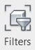
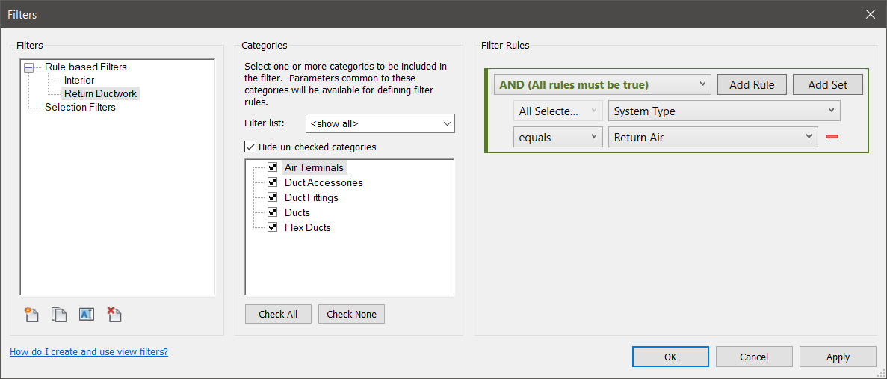
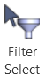
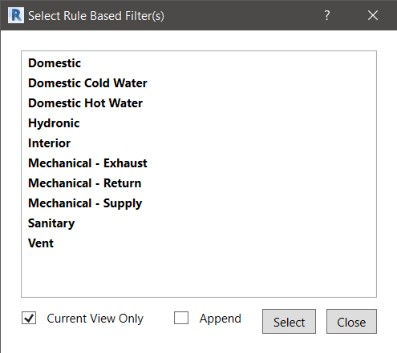

Feature 1 - Using Revit Rule Based Filters to Select Objects
With the help of the Rule Based Selection feature you can use the built-in Revit “Rule Based Filters” to select Revit elements from your model.
Create a Revit Rule Based Filter
The creation of Rule Based Filters is built into Revit. We outline the process here only for completeness.
In Revit, Navigate to: View tab - Graphics panel - Filters command:

Which opens up the following Filters dialog box:

- Create a named “Rule Based Filter.
- Choose the desired element categories.
- Add any extra filter rules.
- Click the OK button:
* Note – For more information see:
http://help.autodesk.com/view/RVT/2019/ENU/?guid=GUID-87A63C25-99A6-428D-A0FF-112E4FC9C3D7
Select Objects Using the Rule Based Filter Select
In Revit: Navigate to BIMrx tab - BIMrx Core panel - Filter Select command:

Which opens up the Select Rule Based Filter(s) dialog box:

This Select Rule Based Filter(s) dialog box shows you the Rule-Based Filters that currently exist in the model.
- Select one or more of the filters by holding down the Shift or Ctrl keys.
- Check the Current View Only check-box if you want to restrict the selection to the current view.
- Otherwise the elements that satisfy the filter(s) will be applied to the whole model.
- Check the Append check-box to have the result appended to the existing Revit selection
- Click the Select button to select the elements and dismiss the dialog.
- Click the Close button to dismiss the dialog with no action taken.
Created with the Personal Edition of HelpNDoc: Create help files for the Qt Help Framework